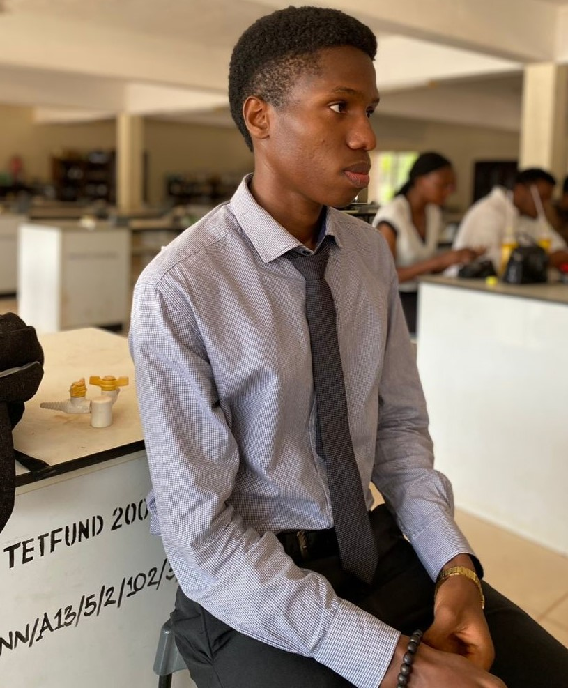

Nnorom Emmanuel

Summary
I'm a Biochemist and an upcoming Web Developer with a passion for creating sleek, user-friendly websites that
not only look good but function seamlessly.
Education
- Bachelor of Science in Biochemistry - University of Nigeria, Nsukka, Nigeria (October 2018 - July 2023)
Work Experience
- Medical Laboratory Intern - Lordaf Hospital, Owerri (August 2022 - November 2022)
- Collection and arrangement of blood samples gotten from patients
- Testing and analysis of samples and recording of results
- Maintained accurate records of results and patients
- IT Operations Technician - Eko Electric Distribution Company, Marina, Lagos (May 2024 - Present)
- Provided routinely maintainance for company staff.
- Installed and configured computer hardware and software.
- Maintained accurate records of staff interactions, instances and solutions provided.
Skills
- Data Collection, Manipulation and Analysis
- Web Design using HTML & CSS
- Cryptocurrency trading and analysis (2020 - Present)
Awards, Certificates and Achievements
- Nigerian Red Cross Certificate of Membership (2024 - Present)
- Certified Web Designer (2024)
Contact
About me